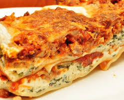

Lasagna
Home

How to make a lasagna
Ingredients
- Meat:
This lasagna recipe starts with a pound of ground meat (½ pound ground pork, ½ pound lean ground beef).
- Onion:
A diced onion is cooked until translucent with the ground meat.
- Canned tomatoes:
You'll need a can of tomato sauce and a can of crushed tomatoes.
- Fresh herbs:
For fresh flavor, chop two tablespoons of parsley and crush one clove of garlic.
- Sugar:
A dash of sugar balances out all of the acidity from the tomatoes.
- Spices and seasonings:
This homemade lasagna is seasoned with dried basil, dried oregano, salt, and black pepper.
- Noodles:
Of course, you'll need lasagna noodles! This recipe calls for uncooked noodles, but you can use the oven-ready variety to save time.
- Cheese:
The cheese layer is made up of cottage cheese and Parmesan. You'll also need shredded mozzarella.
- Eggs:
Eggs make the cheese layer extra creamy. Plus, they act as a binding agent (which means they hold the layer together).
Steps
- Cook the meat: Cook the ground meat in a skillet until browned and crumbly. Add the onion and continue cooking until it's translucent.
Stir in the canned tomato products, half of the parsley, garlic, basil, 1.5 teaspoons of salt, oregano, and sugar.
- Cook the noodles: Boil the lasagna noodles in lightly salted water until they're al dente.
- Make the cheese layer:
- Assemble the lasagna: Mix cottage cheese, Parmesan cheese, eggs, the remaining parsley, the remaining salt, and pepper in a bowl.
- Bake the lasagna: Cover with foil and bake in the preheated oven for about half an hour. Remove the foil and continue baking until the top is golden brown.